Entrega 4
Introduccióna

En esta entrega se realiza un estudio sistemático de los factores que podrían influir en el tiempo de vuelo de los helicópteros de papel. El objetivo principal es identificar qué variables de diseño ejercen un efecto significativo sobre el rendimiento aerodinámico y cuantificar la magnitud de dichos efectos mediante técnicas de diseño factorial.
El comportamiento de un helicóptero de papel depende de numerosos factores físicos y estructurales. En este caso, se han seleccionado los siguientes como variables experimentales:
A: Largo de Alas
B: Alto Rotor
C: Ancho Rotor
D: Alto Cuerpo
E: Ancho Cuerpo
F: Clip
G: Gramaje Papel
H: Celo Cuerpo
Los datos principales provienen del grupo P.IV quienes realizaron los ensayos en el edificio Sabatini del campus Fábrica de Armas (Toledo). Los helicópteros se diseñaron, cortaron y lanzaron de forma aleatorizada para minimizar sesgos y garantizar la validez de las conclusiones.
A lo largo de esta práctica se aplicarán distintos enfoques de análisis factorial, desde diseños completos hasta fraccionados, con y sin bloques o réplicas experimentales, con el fin de evaluar la robustez de los resultados y optimizar los recursos experimentales disponibles.
Para el desarrollo del análisis se emplean las siguientes librerías de R:
library(grid)
library(conf.design)
library(DoE.base)
library(FrF2)Rodriguez (2025b)
Analisis factorial completo
Para empezar se realiza un análisis de tres factores A(largo de alas), C(ancho de rotor) y F(con clip o sin clip).
Experimento del grupo P.IV
En este experimento se dejaron caer 8 helicópteros en los cuales se fueron mezclando los diferentes factores a estudiar. Los helicopteros se cortaron en orden aleatorio y no se volaron en un orden estándar, con el fin de evitar sesgos en los resultados. Los datos que se obtuvieron son los siguientes:
Diseño <- fac.design(2, 3, randomize = F,
factor.names = list(a = c(-1, 1), c = c(-1, 1), f = c(-1, 1)))
TiempoP4 <- c(5.26,5.24,5.29,7.45,6.1,6.76,4.75,6)
Tiempo <- TiempoP4
(DiseñoR <- add.response(Diseño, response = Tiempo) ) a c f Tiempo
1 -1 -1 -1 5.26
2 1 -1 -1 5.24
3 -1 1 -1 5.29
4 1 1 -1 7.45
5 -1 -1 1 6.10
6 1 -1 1 6.76
7 -1 1 1 4.75
8 1 1 1 6.00
class=design, type= full factorial lm(Tiempo ~ (a + c + f)^3, data = DiseñoR)
Call:
lm.default(formula = Tiempo ~ (a + c + f)^3, data = DiseñoR)
Coefficients:
(Intercept) a1 c1 f1 a1:c1 a1:f1
5.85625 0.50625 0.01625 0.04625 0.34625 -0.02875
c1:f1 a1:c1:f1
-0.54375 -0.19875 a y la interacción a:c aumentan el Tiempo, mientras que c:f lo reduce significativamente.
DanielPlot(DiseñoR, autolab = F)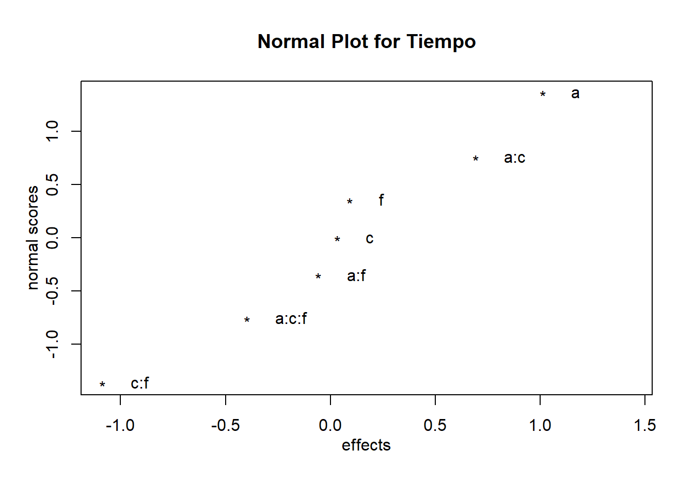
En el DanielPlot, los efectos a, a:c y c:f se destacan como significativos; a y a:c incrementan el Tiempo, mientras que c:f lo disminuye. a:c:f tambien destaca, pero no tanto.
MEPlot(DiseñoR, cex.title = 0.9)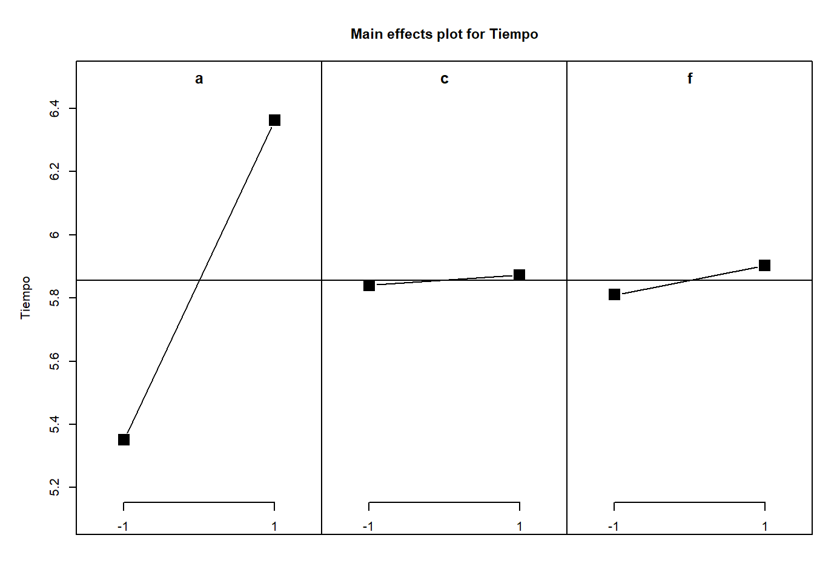
El gráfico muestra el efecto de cada factor sobre la media. a tiene mayor pendiente y es el más significativo, seguido de f; c apenas influye, y su pequeña variación probablemente se deba al azar.
IAPlot(DiseñoR, cex.title = 0.95)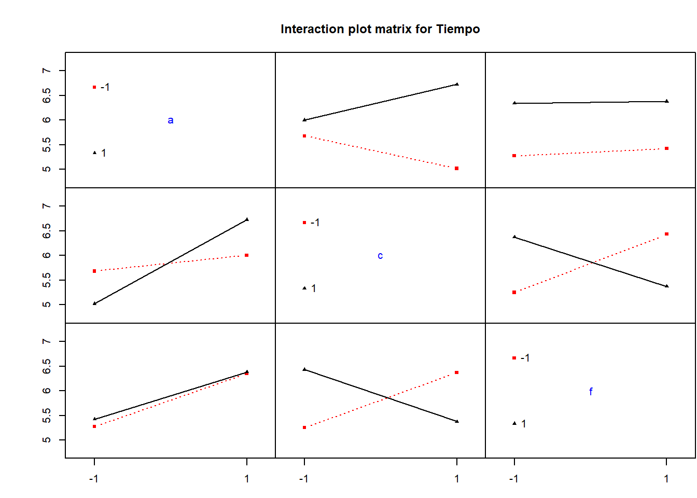
Representa gráficamente la interacción entre los factores. Las líneas más perpendiculares, y por tanto la interacción más fuerte, se observan en c:f. También se aprecia una leve interacción en a:c, mientras que a:f apenas muestra efecto. En este gráfico no se representan las interacciones triples.
cubePlot(obj = lm(Tiempo ~ (a + c + f)^3, data = DiseñoR),
eff1 = "a",eff2 = "c",eff3 = "f",main = "Interacción acf",
round = 2,cex.clab= 0.8,size=.3,y.margin.add=.2)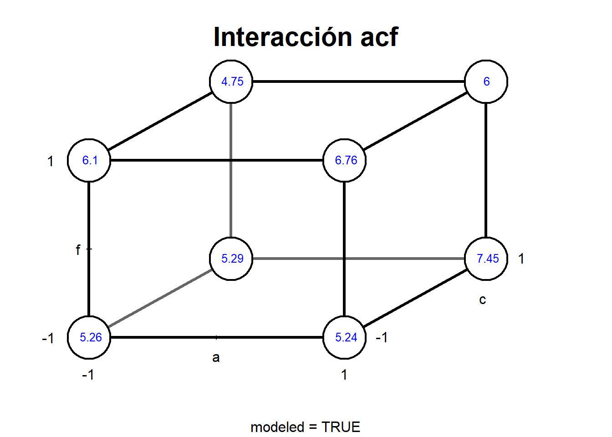
El gráfico muestra que al aumentar los factores a, c y f simultáneamente, el Tiempo también aumenta, evidenciando una interacción positiva entre ellos. Los valores más altos se presentan cuando todos los factores están en su nivel alto.
Rodriguez (2025a)
P.II y P.IV (pseudoreplicas)
“Pseudoreplicación: Elija Sus Datos Sabiamente” (2022)
Ahora, los datos serán analizados nuevamente incorporando los resultados obtenidos por el grupo P.II como réplicas experimentales.
Diseño <- fac.design(2, 3, replications = 2, randomize = F,
factor.names = list(a = c(-1, 1), c = c(-1, 1), f = c(-1, 1)))
TiempoP2 <- c(5.25,4.93,4.58,4.79,4.71,5.85,5.24,5.49)
Tiempo<-c(TiempoP4, TiempoP2)
( DiseñoR <- add.response(Diseño, response = Tiempo) ) run.no run.no.std.rp a c f Blocks Tiempo
1 1 1.1 -1 -1 -1 .1 5.26
2 2 2.1 1 -1 -1 .1 5.24
3 3 3.1 -1 1 -1 .1 5.29
4 4 4.1 1 1 -1 .1 7.45
5 5 5.1 -1 -1 1 .1 6.10
6 6 6.1 1 -1 1 .1 6.76
7 7 7.1 -1 1 1 .1 4.75
8 8 8.1 1 1 1 .1 6.00
9 9 1.2 -1 -1 -1 .2 5.25
10 10 2.2 1 -1 -1 .2 4.93
11 11 3.2 -1 1 -1 .2 4.58
12 12 4.2 1 1 -1 .2 4.79
13 13 5.2 -1 -1 1 .2 4.71
14 14 6.2 1 -1 1 .2 5.85
15 15 7.2 -1 1 1 .2 5.24
16 16 8.2 1 1 1 .2 5.49
class=design, type= full factorial
NOTE: columns run.no and run.no.std.rp are annotation,
not part of the data framelm(Tiempo ~ (a + c + f)^3, data = DiseñoR)
Call:
lm.default(formula = Tiempo ~ (a + c + f)^3, data = DiseñoR)
Coefficients:
(Intercept) a1 c1 f1 a1:c1 a1:f1
5.48062 0.33313 -0.03187 0.13188 0.15062 0.07937
c1:f1 a1:c1:f1
-0.21063 -0.18812 El efecto más fuerte y positivo proviene de a, seguido por f y a:c, que tienen impactos menores. Las interacciones c:f y a:c:f generan los efectos negativos más notables, aunque siguen siendo mucho menos influyentes que a.
DanielPlot(DiseñoR, autolab = F)
Los factores c:f, a:c:f, a y a:c se desvían notablemente del comportamiento lineal, lo que confirma que son los más influyentes en el modelo, tal como se observó previamente.
MEPlot(DiseñoR, cex.title = 0.9)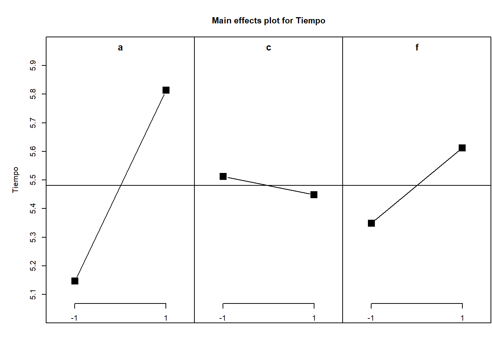
a tiene mayor pendiente y es el más significativo, seguido de f que sigue teniendo una pendiente muy grande; c apenas influye, y su pequeña variación probablemente se deba al azar.
IAPlot(DiseñoR, cex.title = 0.95)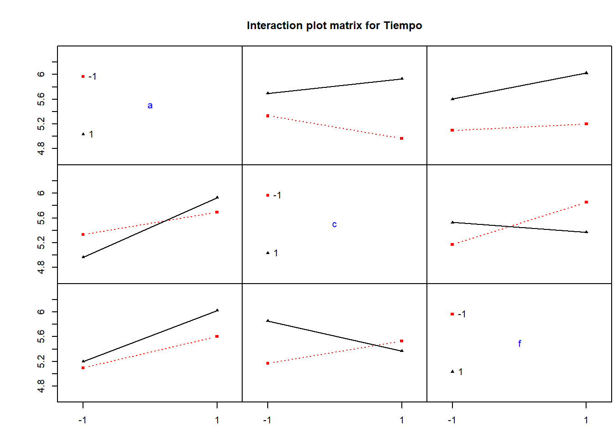
La interacción más fuerte, se observan en c:f. También se aprecia una leve interacción en a:c, mientras que a:f apenas muestra efecto. En este gráfico no se representan las interacciones triples.
summary(aov(lm(Tiempo ~ (a + c + f)^3, data = Diseño))) Df Sum Sq Mean Sq F value Pr(>F)
a 1 1.776 1.7756 2.598 0.146
c 1 0.016 0.0163 0.024 0.881
f 1 0.278 0.2783 0.407 0.541
a:c 1 0.363 0.3630 0.531 0.487
a:f 1 0.101 0.1008 0.147 0.711
c:f 1 0.710 0.7098 1.038 0.338
a:c:f 1 0.566 0.5663 0.828 0.389
Residuals 8 5.468 0.6835 Ningún factor ni interacción resulta estadísticamente significativo (todos los p-valores > 0.05). Sin embargo, el factor a muestra el mayor efecto relativo, seguido de la interacción c:f, lo cual coincide con lo observado en los gráficos de efectos e interacciones.
Considerando el factor Grupo como Bloque
Con esta consideración se establece que no interesan las interacciones entre el Grupo (bloque) y el resto de factores.
Diseño <- fac.design(2, 3, replications = 2, block.name = "Grupo", randomize = F,
factor.names = list(a = c(-1, 1), c = c(-1, 1), f = c(-1, 1)))
( DiseñoR <- add.response(Diseño, response = Tiempo) ) run.no run.no.std.rp a c f Grupo Tiempo
1 1 1.1 -1 -1 -1 .1 5.26
2 2 2.1 1 -1 -1 .1 5.24
3 3 3.1 -1 1 -1 .1 5.29
4 4 4.1 1 1 -1 .1 7.45
5 5 5.1 -1 -1 1 .1 6.10
6 6 6.1 1 -1 1 .1 6.76
7 7 7.1 -1 1 1 .1 4.75
8 8 8.1 1 1 1 .1 6.00
9 9 1.2 -1 -1 -1 .2 5.25
10 10 2.2 1 -1 -1 .2 4.93
11 11 3.2 -1 1 -1 .2 4.58
12 12 4.2 1 1 -1 .2 4.79
13 13 5.2 -1 -1 1 .2 4.71
14 14 6.2 1 -1 1 .2 5.85
15 15 7.2 -1 1 1 .2 5.24
16 16 8.2 1 1 1 .2 5.49
class=design, type= full factorial
NOTE: columns run.no and run.no.std.rp are annotation,
not part of the data framelm(Tiempo ~ (a + c + f)^3 + Grupo, data = DiseñoR)
Call:
lm.default(formula = Tiempo ~ (a + c + f)^3 + Grupo, data = DiseñoR)
Coefficients:
(Intercept) a1 c1 f1 Grupo.2 a1:c1
5.85625 0.33313 -0.03187 0.13188 -0.75125 0.15062
a1:f1 c1:f1 a1:c1:f1
0.07937 -0.21063 -0.18812 El modelo indica que el factor a tiene el efecto positivo más fuerte sobre el tiempo, seguido por f, mientras que c apenas influye. El Grupo.2 reduce significativamente el tiempo, mostrando un desempeño más rápido. Las interacciones a:c y a:f son levemente positivas, mientras que c:f y a:c:f son negativas, lo que sugiere que la combinación de los tres factores atenúa el incremento del tiempo producido por a.
DanielPlot(DiseñoR, autolab = F)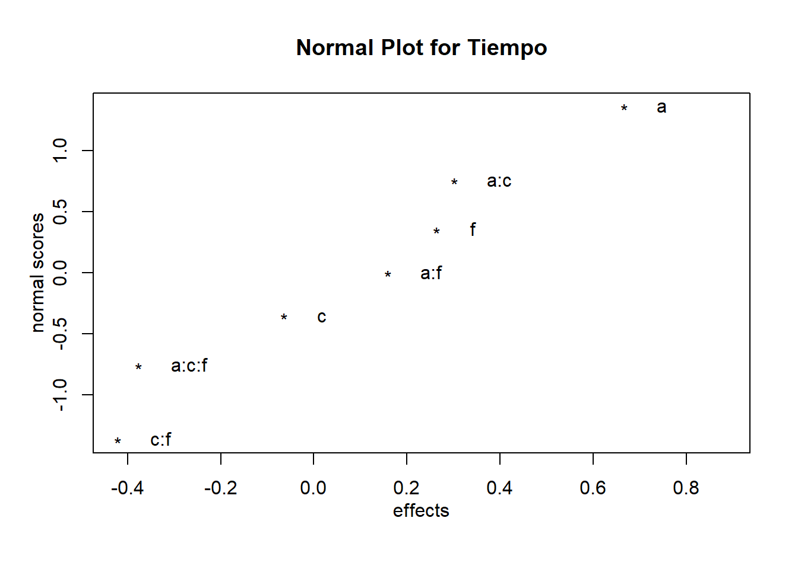
MEPlot(DiseñoR, cex.title = 0.9)
IAPlot(DiseñoR, cex.title = 0.95)
summary(aov(lm(Tiempo ~ (a + c + f)^3 + Grupo, data = Diseño))) Df Sum Sq Mean Sq F value Pr(>F)
a 1 1.776 1.7756 3.871 0.0898 .
c 1 0.016 0.0163 0.035 0.8560
f 1 0.278 0.2783 0.607 0.4616
Grupo 1 2.258 2.2575 4.922 0.0620 .
a:c 1 0.363 0.3630 0.791 0.4032
a:f 1 0.101 0.1008 0.220 0.6535
c:f 1 0.710 0.7098 1.548 0.2535
a:c:f 1 0.566 0.5663 1.235 0.3032
Residuals 7 3.211 0.4587
---
Signif. codes: 0 '***' 0.001 '**' 0.01 '*' 0.05 '.' 0.1 ' ' 1El análisis ANOVA muestra que ningún factor es estadísticamente significativo al 5%, aunque a (p = 0.0898) y Grupo (p = 0.0620) se acercan al umbral, indicando que podrían tener cierta influencia sobre el tiempo. El resto de los factores e interacciones presentan valores de p altos, lo que sugiere efectos débiles o poco relevantes. En conjunto, el modelo refleja una tendencia donde a y Grupo son los factores más influyentes, pero sin evidencia fuerte de significancia.
Conclusión “P”
En este experimento, el modelo que incluye el factor Grupo como bloque es el más informativo, ya que permite aislar las diferencias entre grupos de trabajo, las cuales son notables pero no forman parte del objetivo principal del análisis. Al considerar Grupo como bloque, se controla su influencia, reduciendo la variabilidad residual y mejorando la interpretación de los efectos de los factores experimentales.
Según los resultados del ANOVA, los factores a (Longitud de las Alas) y Grupo muestran los efectos más relevantes, aunque solo se aproximan a la significancia estadística. El resto de factores e interacciones no presentan evidencia de influencia importante sobre el tiempo.
El gráfico de Daniel respalda esta conclusión: el factor a se separa claramente del comportamiento lineal, lo que confirma su peso dentro del modelo. El gráfico de efectos principales muestra, además, que el efecto de a es positivo, incrementando el tiempo medio al pasar del nivel bajo al nivel alto.
Finalmente, puede observarse que cuando el factor Grupo no se incluye como bloque, el modelo pierde potencia: la variabilidad residual aumenta, el estadístico F disminuye y los efectos aparentan ser menos significativos. Incluir el bloque, por tanto, mejora la precisión del análisis al eliminar parte de la incertidumbre asociada a las diferencias entre grupos.residuos, por lo tanto el denominador del estadístico F aumenta y su valor disminuye.
GARCÍA, ABAD, and TELLO (2011)
Diseño <- fac.design(2, 3, replications = 2, randomize = F,
factor.names = list(a = c(-1, 1), c = c(-1, 1), f = c(-1, 1)))
Tiempo<-c(TiempoP4, TiempoP2)
DiseñoR <- add.response(Diseño, response = Tiempo)
summary(aov(lm(Tiempo ~ (a + c + f)^3, data = DiseñoR))) Df Sum Sq Mean Sq F value Pr(>F)
a 1 1.776 1.7756 2.598 0.146
c 1 0.016 0.0163 0.024 0.881
f 1 0.278 0.2783 0.407 0.541
a:c 1 0.363 0.3630 0.531 0.487
a:f 1 0.101 0.1008 0.147 0.711
c:f 1 0.710 0.7098 1.038 0.338
a:c:f 1 0.566 0.5663 0.828 0.389
Residuals 8 5.468 0.6835 Considerando el factor Altura como Bloque P.III y P.IV
Con esta consideración se establece que no interesan las interacciones entre el Grupo (bloque) y el resto de los factores experimentales. En este caso, los grupos se diferencian principalmente en la altuta desde el cual se realizaron los lanzamientos: el grupo P.IV efectuó las pruebas desde el edificio Sabatini, mientras que el grupo P.III lo hizo desde el edificio 6. Esta diferencia no solo implica una variación en la altura de lanzamiento, sino también posibles cambios en las condiciones ambientales,como corrientes de aire, temperatura o turbulencias locales. Lo que puede añadir una fuente adicional de variabilidad experimental ajena a los factores controlados en el diseño.
Diseño <- fac.design(2, 3, replications = 2, block.name = "Altura", randomize = F,
factor.names = list(a = c(-1, 1), c = c(-1, 1), f = c(-1, 1)))
TiempoP4 <- c(5.26,5.24,5.29,7.45,6.1,6.76,4.75,6)
TiempoP3 <- c(3.11, 4.33, 3.86, 3.63, 3.83, 5.27, 3.58, 4.74)
Tiempo<-c(TiempoP4, TiempoP3)
( DiseñoR <- add.response(Diseño, response = Tiempo)) run.no run.no.std.rp a c f Altura Tiempo
1 1 1.1 -1 -1 -1 .1 5.26
2 2 2.1 1 -1 -1 .1 5.24
3 3 3.1 -1 1 -1 .1 5.29
4 4 4.1 1 1 -1 .1 7.45
5 5 5.1 -1 -1 1 .1 6.10
6 6 6.1 1 -1 1 .1 6.76
7 7 7.1 -1 1 1 .1 4.75
8 8 8.1 1 1 1 .1 6.00
9 9 1.2 -1 -1 -1 .2 3.11
10 10 2.2 1 -1 -1 .2 4.33
11 11 3.2 -1 1 -1 .2 3.86
12 12 4.2 1 1 -1 .2 3.63
13 13 5.2 -1 -1 1 .2 3.83
14 14 6.2 1 -1 1 .2 5.27
15 15 7.2 -1 1 1 .2 3.58
16 16 8.2 1 1 1 .2 4.74
class=design, type= full factorial
NOTE: columns run.no and run.no.std.rp are annotation,
not part of the data framelm(Tiempo ~ (a + c + f)^3 + Altura, data = DiseñoR)
Call:
lm.default(formula = Tiempo ~ (a + c + f)^3 + Altura, data = DiseñoR)
Coefficients:
(Intercept) a1 c1 f1 Altura.2 a1:c1
5.85625 0.47750 -0.03750 0.17875 -1.81250 0.06500
a1:f1 c1:f1 a1:c1:f1
0.08625 -0.32375 -0.02625 Lanzar el helicoptero en el edificio 6 tiene un efecto muy negativo, es el mas grande de todos por mucho. Si no se hubiera considerado como bloque este efecto habría contaminado el error residual.
DanielPlot(DiseñoR, autolab = F)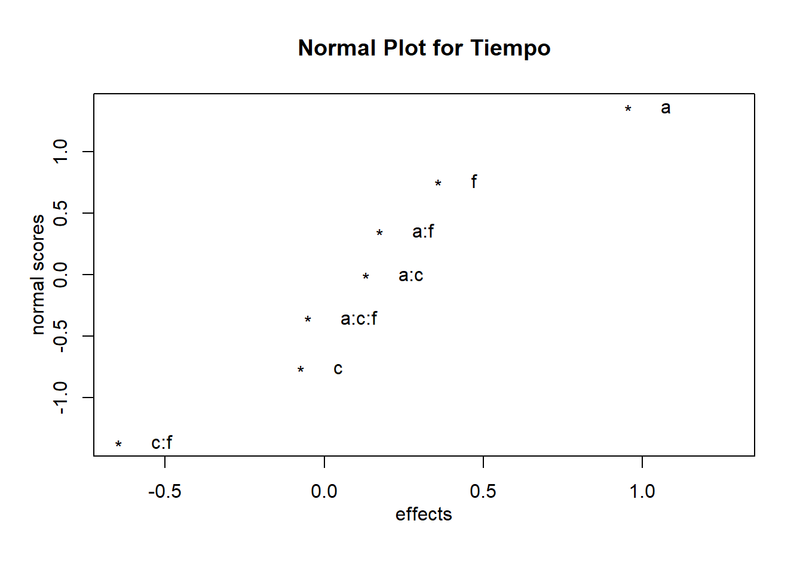
DanielPlot(DiseñoR, autolab = T)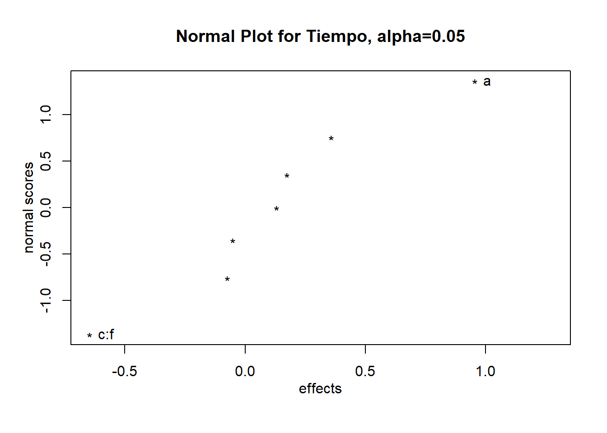
MEPlot(DiseñoR, cex.title = 0.9)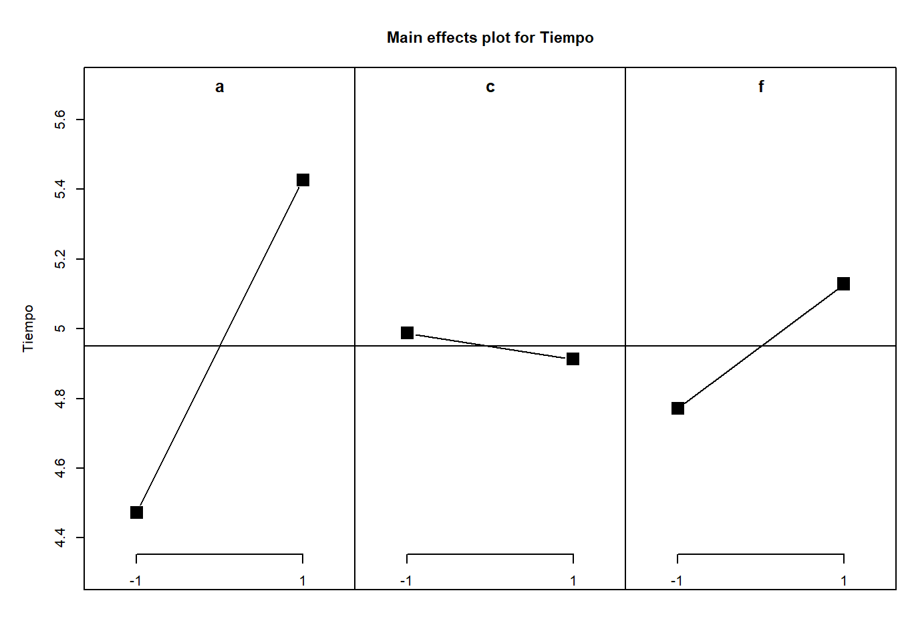
IAPlot(DiseñoR, cex.title = 0.95)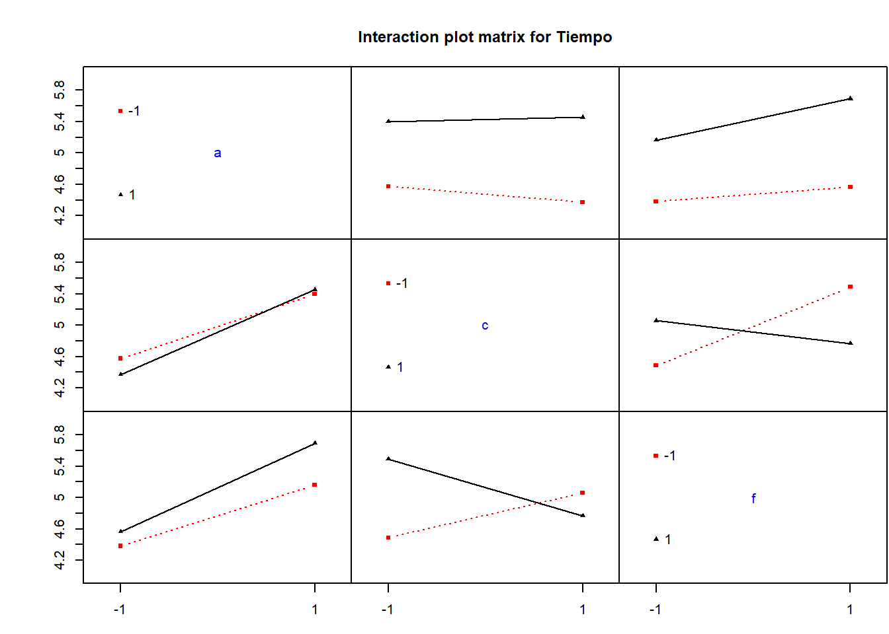
summary(aov(lm(Tiempo ~ (a + c + f)^3 + Altura, data = DiseñoR))) Df Sum Sq Mean Sq F value Pr(>F)
a 1 3.648 3.648 8.323 0.02348 *
c 1 0.022 0.022 0.051 0.82723
f 1 0.511 0.511 1.166 0.31594
Altura 1 13.141 13.141 29.981 0.00093 ***
a:c 1 0.068 0.068 0.154 0.70621
a:f 1 0.119 0.119 0.272 0.61836
c:f 1 1.677 1.677 3.826 0.09135 .
a:c:f 1 0.011 0.011 0.025 0.87846
Residuals 7 3.068 0.438
---
Signif. codes: 0 '***' 0.001 '**' 0.01 '*' 0.05 '.' 0.1 ' ' 1Conclusión “G”
En este diseño, el factor Altura se incorpora como bloque para aislar la variabilidad asociada a las diferentes condiciones de lanzamiento entre el edificio Sabatini (P.IV) y el edificio 6 (P.III). Esta variabilidad, atribuible a diferencias en corrientes de aire, temperatura y turbulencias locales,pero sobretodo, a la altura, no constituye el foco de interés del estudio. Al tratarse de una fuente de heterogeneidad conocida pero ajena a los factores experimentales, se excluyen deliberadamente las interacciones entre Altura y los factores a, c y f del modelo, tal como prescribe la teoría de diseños en bloques. De La Torre Rosario (2018)
El modelo ajustado sigue la estructura: Y_{ijk} = \mu + \underbrace{\beta_i}_{\text{Altura}} + \underbrace{\tau_j}_{a} + \underbrace{\gamma_k}_{c} + \underbrace{\delta_l}_{f} + (\tau\gamma)_{jk} + (\tau\delta)_{jl} + (\gamma\delta)_{kl} + (\tau\gamma\delta)_{jkl} + \epsilon_{ijk}
El análisis estadístico revela resultados concluyentes. El gráfico de Daniel identifica claramente el efecto principal del factor a (longitud de alas) como significativo, junto con el bloque Altura. La interacción c:f emerge como marginalmente notable, mientras que los demás efectos e interacciones son claramente despreciables.
El gráfico de efectos principales confirma que el factor a posee un efecto positivo y robusto de aproximadamente 0.48 segundos al pasar de su nivel bajo a alto. En contraste, el factor c (ancho) muestra un efecto prácticamente nulo (-0.04 s), y el factor f registra un efecto moderado pero no significativo (0.18 s). El bloque Altura exhibe el efecto más pronunciado, con una diferencia de -1.81 segundos entre edificios, validando su inclusión como fuente controlada de variabilidad.
El ANOVA confirma estas observaciones: el factor a es significativo (p = 0.023), la Altura es altamente significativa (p < 0.001), y la interacción c:f es marginalmente significativa (p = 0.091). La inclusión del bloque Altura reduce sustancialmente la variabilidad residual (MS_resid = 0.438), incrementando la precisión del experimento y permitiendo detectar efectos genuinos que de otro modo permanecerían ocultos.
Es crucial destacar que el diseño en bloques fue imprescindible. Si se omite el factor Altura del modelo, el incremento en la suma de cuadrados del error residual diluiría la significancia de los factores experimentales, comprometiendo la capacidad para identificar diferencias reales. Esta estrategia metodológica demuestra que controlar las fuentes conocidas de variabilidad ambiental no solo es estadísticamente correcto, sino que fortalece la conclusión de que la longitud de alas es el único factor con efecto sistemático y reproducible sobre el tiempo de vuelo, mientras que la interacción entre ancho y el factor F (c:f) merece investigación adicional con réplicas aumentadas. De La Torre Rosario (2018)
Diseño <- fac.design(2, 3, replications = 2, randomize = F,
factor.names = list(a = c(-1, 1), c = c(-1, 1), f = c(-1, 1)))
Tiempo<-c(TiempoP4, TiempoP3)
DiseñoR <- add.response(Diseño, response = Tiempo)
summary(aov(lm(Tiempo ~ (a + c + f)^3, data = Diseño))) Df Sum Sq Mean Sq F value Pr(>F)
a 1 3.648 3.648 1.801 0.216
c 1 0.022 0.022 0.011 0.919
f 1 0.511 0.511 0.252 0.629
a:c 1 0.068 0.068 0.033 0.860
a:f 1 0.119 0.119 0.059 0.815
c:f 1 1.677 1.677 0.828 0.390
a:c:f 1 0.011 0.011 0.005 0.943
Residuals 8 16.209 2.026 Al omitir el factor Altura como bloque, el error residual se infla 4.6 veces, al absorber la variabilidad entre edificios. Esta contaminación del error reduce drásticamente la potencia estadística, haciendo que el factor A deje de ser significativo (p=0.216 vs p=0.023) y ocultando efectos genuinos. Sin bloqueo, el riesgo de concluir erróneamente que ningún factor afecta el tiempo de vuelo es elevado, demostrando que el diseño en bloques fue metodológicamente imprescindible para aislar la variabilidad y obtener estimaciones precisas.
Analisis fraccionado
Introducción
El estudio integral de los factores que afectan el tiempo de vuelo de un helicóptero de papel requiere evaluar simultáneamente múltiples variables de diseño. Con ocho factores de interés:
A: Largo de Alas
B: Alto Rotor
C: Ancho Rotor
D: Alto Cuerpo
E: Ancho Cuerpo
F: Clip
G: Gramaje Papel
H: Celo Cuerpo
El diseño factorial completo requeriría 2^8=256 combinaciones experimentales, lo que supera las restricciones de tiempo y recursos disponibles. Para superar esta limitación, se implementa un diseño factorial fraccionado de resolución IV con 16 experimentos, correspondiente a una fracción 1/16 del diseño completo.
El experimento contempla dos configuraciones físicas distintas: helicópteros Pequeños (P) con dimensiones reducidas y Grandes (G) con dimensiones ampliadas, manteniendo el mismo rango relativo de variación para cada factor. Este diseño 2^{8−4} permite estimar los efectos principales libres de confusión entre sí, aunque algunos de ellos permanecen confundidos con interacciones de orden tres, mientras que las interacciones de segundo orden están confundidas entre sí, lo que resulta aceptable bajo el supuesto de efectos de interacción despreciables (efectos sparsity).
Las diferencias entre grupos pueden considerarse bloques, para aisalr la variabilidad asociada.
Rodriguez (2025a)
Helicóptero P.IV: Sin réplicas
Diseño <- FrF2(16, randomize = F, replications = 1,
factor.names = list(A="", B="", C="", D="", E="", F="", G="", H=""))
Tiempo <- c(5.45, 4.19, 4.18, 3.93, 3.84, 4.8, 4.44, 5.4, 3.15, 4.57, 3.96, 5.39, 4.75, 4.91, 4.72, 4.48)
DiseñoR <- add.response(Diseño, Tiempo)
DanielPlot(DiseñoR, autolab = F)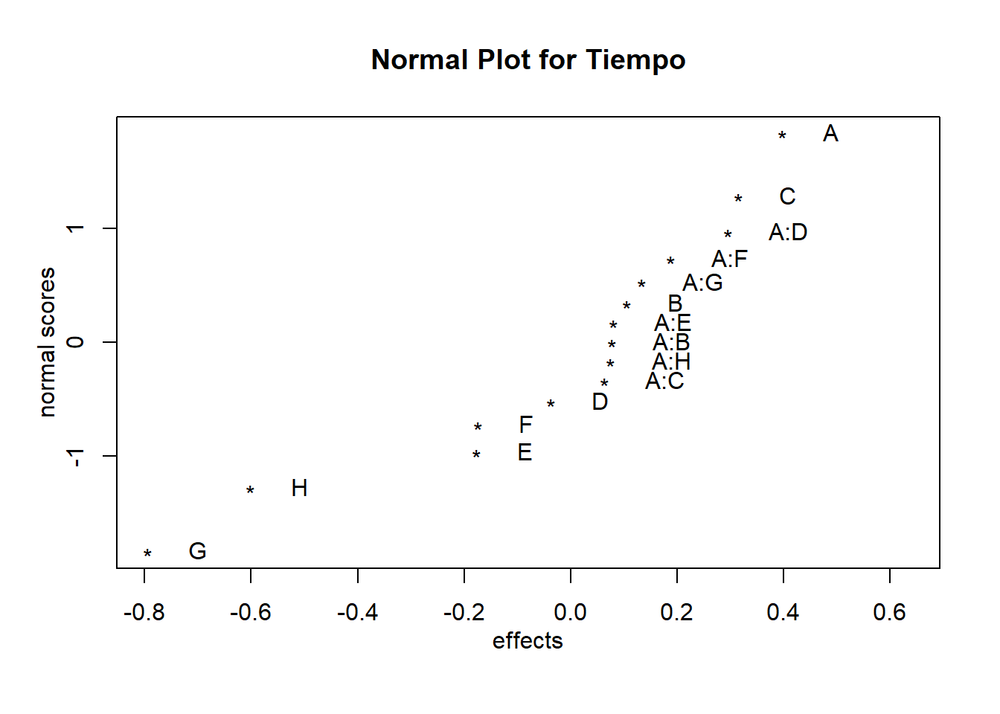
DanielPlot(DiseñoR, autolab = T)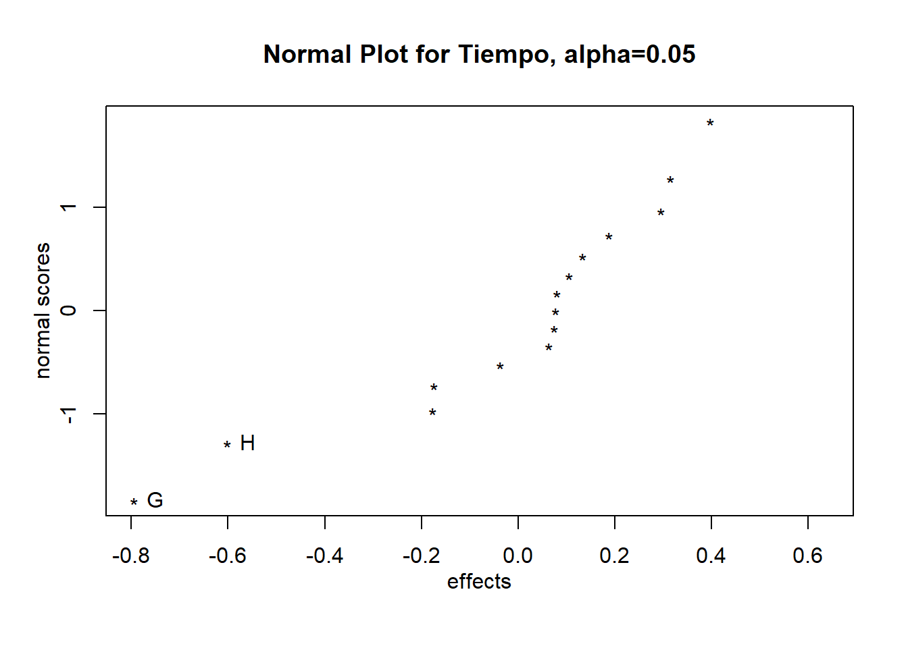
MEPlot(DiseñoR, cex.title = 0.9)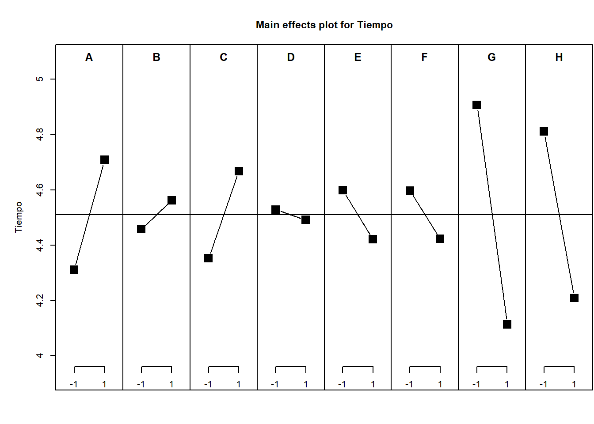
summary(lm(Tiempo ~ A + B + C + D + E + F + G + H, data = DiseñoR))
Call:
lm.default(formula = Tiempo ~ A + B + C + D + E + F + G + H,
data = DiseñoR)
Residuals:
Min 1Q Median 3Q Max
-0.2350 -0.1400 -0.0300 0.0525 0.4550
Coefficients:
Estimate Std. Error t value Pr(>|t|)
(Intercept) 4.51000 0.07599 59.352 1.01e-10 ***
A1 0.19875 0.07599 2.616 0.03463 *
B1 0.05250 0.07599 0.691 0.51188
C1 0.15750 0.07599 2.073 0.07691 .
D1 -0.01875 0.07599 -0.247 0.81218
E1 -0.08875 0.07599 -1.168 0.28106
F1 -0.08750 0.07599 -1.152 0.28733
G1 -0.39750 0.07599 -5.231 0.00121 **
H1 -0.30125 0.07599 -3.964 0.00543 **
---
Signif. codes: 0 '***' 0.001 '**' 0.01 '*' 0.05 '.' 0.1 ' ' 1
Residual standard error: 0.304 on 7 degrees of freedom
Multiple R-squared: 0.8914, Adjusted R-squared: 0.7673
F-statistic: 7.181 on 8 and 7 DF, p-value: 0.008701summary(aov(lm(Tiempo ~ A + B + C + D + E + F + G + H, data = DiseñoR))) Df Sum Sq Mean Sq F value Pr(>F)
A 1 0.6320 0.6320 6.841 0.03463 *
B 1 0.0441 0.0441 0.477 0.51188
C 1 0.3969 0.3969 4.296 0.07691 .
D 1 0.0056 0.0056 0.061 0.81218
E 1 0.1260 0.1260 1.364 0.28106
F 1 0.1225 0.1225 1.326 0.28733
G 1 2.5281 2.5281 27.365 0.00121 **
H 1 1.4520 1.4520 15.717 0.00543 **
Residuals 7 0.6467 0.0924
---
Signif. codes: 0 '***' 0.001 '**' 0.01 '*' 0.05 '.' 0.1 ' ' 1El diseño factorial fraccionado 2^{8−4} de 16 experimentos identifica claramente tres factores dominantes sobre el tiempo de vuelo del helicóptero. El modelo explica el 89.1% de la variabilidad total con un error residual de 0.304 segundos, y la estadística global es altamente significativa (F=7.18, p=0.009), confirmando que los efectos principales capturan adecuadamente los cambios experimentales.
El gramaje del papel (G) emerge como el factor más preponderante, reduciendo el tiempo de vuelo en 0.8 segundos al incrementarse de 80 a 100 g/m². Le sigue el uso de celo (H) con efecto negativo de 0.6 segundos, y el largo de alas (A) como único efecto positivo significativo, incrementando el vuelo en 0.4 segundos.
El ancho del rotor (C) es marginalmente significativo (p=0.077), mientras que B, D, E y F resultan claramente no influyentes.
Como diseño de resolución IV, los efectos principales están libres de confusión entre sí pero confundidos con interacciones de tercer orden.
Los resultados marginales de A y C requieren validación mediante réplicas adicionales o un diseño de resolución V que distinga las interacciones de segundo orden si resultan teóricamente relevantes.
Helicóptero P.IV: 2 réplicas
Diseño <- FrF2(16, randomize = F, replications = 2,
factor.names = list(A="", B="", C="", D="", E="", F="", G="", H=""))
Diseño$Grupo <- as.factor(c(rep(1, 16), rep(-1, 16)))
Tiempo1 <- c(5.45, 4.19, 4.18, 3.93, 3.84, 4.8, 4.44, 5.4, 3.15, 4.57, 3.96, 5.39, 4.75, 4.91, 4.72, 4.48)
Tiempo2 <- c(5.47, 4.32, 4.34, 4.08, 3.89, 5.35, 3.84, 5.12, 3.6, 4.93, 3.28, 4.64, 4.21, 4.21, 4.01, 4.04)
Tiempo <- c(Tiempo1,Tiempo2)
DiseñoR <- add.response(Diseño, Tiempo)
DanielPlot(DiseñoR, autolab = F)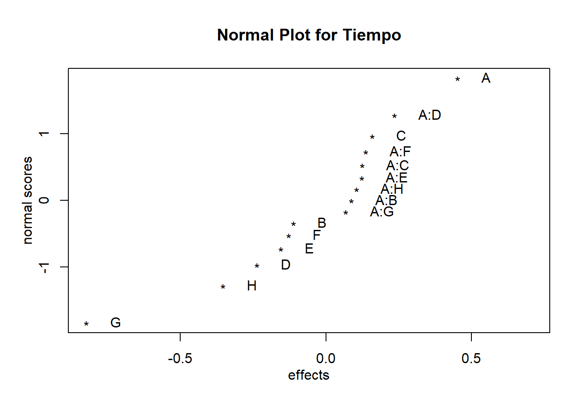
DanielPlot(DiseñoR, autolab = T)MEPlot(DiseñoR, cex.title = 0.9)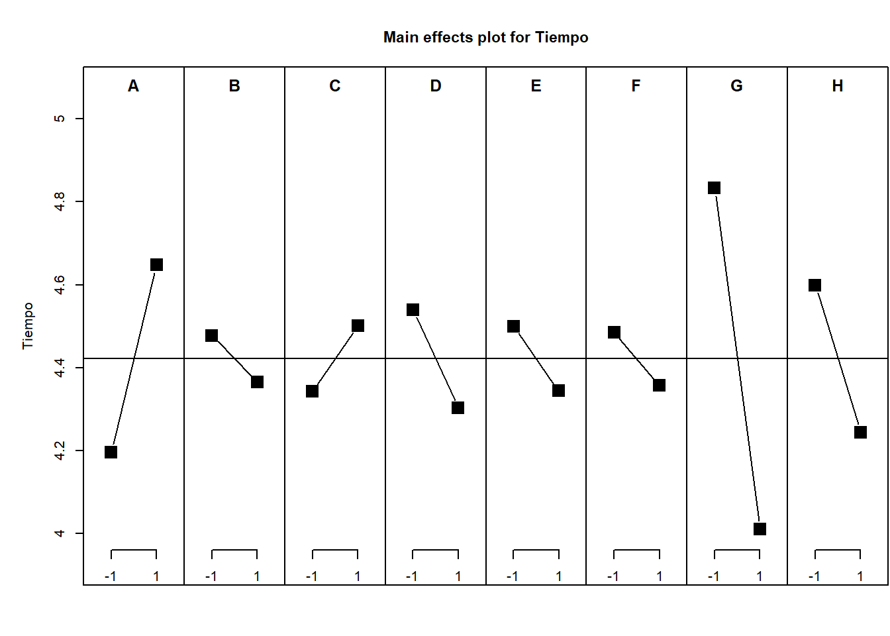
summary(lm(Tiempo ~ A + B + C + D + E + F + G + H , data = DiseñoR))
Call:
lm.default(formula = Tiempo ~ A + B + C + D + E + F + G + H,
data = DiseñoR)
Residuals:
Min 1Q Median 3Q Max
-0.46656 -0.25969 0.01469 0.22469 0.65844
Coefficients:
Estimate Std. Error t value Pr(>|t|)
(Intercept) 4.42156 0.06211 71.194 < 2e-16 ***
A1 0.22594 0.06211 3.638 0.00138 **
B1 -0.05594 0.06211 -0.901 0.37709
C1 0.07906 0.06211 1.273 0.21573
D1 -0.11844 0.06211 -1.907 0.06908 .
E1 -0.07781 0.06211 -1.253 0.22283
F1 -0.06406 0.06211 -1.032 0.31303
G1 -0.41156 0.06211 -6.627 9.24e-07 ***
H1 -0.17719 0.06211 -2.853 0.00900 **
---
Signif. codes: 0 '***' 0.001 '**' 0.01 '*' 0.05 '.' 0.1 ' ' 1
Residual standard error: 0.3513 on 23 degrees of freedom
Multiple R-squared: 0.7629, Adjusted R-squared: 0.6804
F-statistic: 9.249 on 8 and 23 DF, p-value: 1.267e-05summary(aov(lm(Tiempo ~ A + B + C + D + E + F + G + H , data = DiseñoR))) Df Sum Sq Mean Sq F value Pr(>F)
A 1 1.634 1.634 13.235 0.00138 **
B 1 0.100 0.100 0.811 0.37709
C 1 0.200 0.200 1.621 0.21573
D 1 0.449 0.449 3.637 0.06908 .
E 1 0.194 0.194 1.570 0.22283
F 1 0.131 0.131 1.064 0.31303
G 1 5.420 5.420 43.914 9.24e-07 ***
H 1 1.005 1.005 8.140 0.00900 **
Residuals 23 2.839 0.123
---
Signif. codes: 0 '***' 0.001 '**' 0.01 '*' 0.05 '.' 0.1 ' ' 1El diseño factorial fraccionado 2^{8−4} con pseudoréplicas (32 experimentos) muestra un modelo robusto que explica el 76.3% de la variabilidad total, con un error residual de 0.351 segundos. La estadística global es altamente significativa (F=9.25, p<0.001), confirmando que los efectos principales capturan adecuadamente los cambios experimentales. Esta mejora respecto al diseño sin réplicas refleja el incremento en grados de libertad (23 vs 7) y la mayor precisión al promediar lanzamientos repetidos.
El factor G (gramaje del papel) domina claramente el comportamiento del sistema con un efecto negativo de −0.412 segundos (F=43.9, p<0.001), reduciendo el tiempo de vuelo en aproximadamente 0.8 segundos al incrementarse de 80 a 100 g/m². Le sigue A (largo de alas) con efecto positivo de 0.226 segundos (F=13.2, p=0.001), prolongando el vuelo en 0.45 segundos al aumentar la superficie de sustentación. H (uso de celo) resulta significativo con efecto negativo de −0.177 segundos (F=8.14, p=0.009), disminuyendo el tiempo en 0.35 segundos. D (alto cuerpo) es marginalmente significativo (p=0.069), mientras que B, C, E y F son claramente no influyentes.
Como diseño de resolución IV, los efectos principales permanecen confundidos con interacciones de tercer orden. La alta significancia y gran magnitud de G, A y H sugieren efectos genuinos, no resultado de la confusion. Sin embargo, sería prudente validar estos resultados mediante un diseño de resolución V o aumentando réplicas adicionales para separarlas de interacciones si resultan teóricamente relevantes para la optimización.
Helicóptero P.IV y P.II: bloque grupo
La principal diferencia entre los grupos P.IV y P.II radica en el tipo de cinta empleada: el primero utiliza cinta adhesiva, mientras que el segundo emplea cinta de doble cara.
Diseño <- FrF2(16, randomize = F, replications = 4,
factor.names = list(A="", B="", C="", D="", E="", F="", G="", H=""))
Diseño$Grupo <- as.factor(c(rep(1, 32), rep(-1, 32)))
Diseño run.no run.no.std.rp A B C D E F G H Grupo
1 1 1.1 -1 -1 -1 -1 -1 -1 -1 -1 1
2 2 2.1 1 -1 -1 -1 1 1 1 -1 1
3 3 3.1 -1 1 -1 -1 1 1 -1 1 1
4 4 4.1 1 1 -1 -1 -1 -1 1 1 1
5 5 5.1 -1 -1 1 -1 1 -1 1 1 1
6 6 6.1 1 -1 1 -1 -1 1 -1 1 1
7 7 7.1 -1 1 1 -1 -1 1 1 -1 1
8 8 8.1 1 1 1 -1 1 -1 -1 -1 1
9 9 9.1 -1 -1 -1 1 -1 1 1 1 1
10 10 10.1 1 -1 -1 1 1 -1 -1 1 1
11 11 11.1 -1 1 -1 1 1 -1 1 -1 1
12 12 12.1 1 1 -1 1 -1 1 -1 -1 1
13 13 13.1 -1 -1 1 1 1 1 -1 -1 1
14 14 14.1 1 -1 1 1 -1 -1 1 -1 1
15 15 15.1 -1 1 1 1 -1 -1 -1 1 1
16 16 16.1 1 1 1 1 1 1 1 1 1
17 17 1.2 -1 -1 -1 -1 -1 -1 -1 -1 1
18 18 2.2 1 -1 -1 -1 1 1 1 -1 1
19 19 3.2 -1 1 -1 -1 1 1 -1 1 1
20 20 4.2 1 1 -1 -1 -1 -1 1 1 1
21 21 5.2 -1 -1 1 -1 1 -1 1 1 1
22 22 6.2 1 -1 1 -1 -1 1 -1 1 1
23 23 7.2 -1 1 1 -1 -1 1 1 -1 1
24 24 8.2 1 1 1 -1 1 -1 -1 -1 1
25 25 9.2 -1 -1 -1 1 -1 1 1 1 1
26 26 10.2 1 -1 -1 1 1 -1 -1 1 1
27 27 11.2 -1 1 -1 1 1 -1 1 -1 1
28 28 12.2 1 1 -1 1 -1 1 -1 -1 1
29 29 13.2 -1 -1 1 1 1 1 -1 -1 1
30 30 14.2 1 -1 1 1 -1 -1 1 -1 1
31 31 15.2 -1 1 1 1 -1 -1 -1 1 1
32 32 16.2 1 1 1 1 1 1 1 1 1
33 33 1.3 -1 -1 -1 -1 -1 -1 -1 -1 -1
34 34 2.3 1 -1 -1 -1 1 1 1 -1 -1
35 35 3.3 -1 1 -1 -1 1 1 -1 1 -1
36 36 4.3 1 1 -1 -1 -1 -1 1 1 -1
37 37 5.3 -1 -1 1 -1 1 -1 1 1 -1
38 38 6.3 1 -1 1 -1 -1 1 -1 1 -1
39 39 7.3 -1 1 1 -1 -1 1 1 -1 -1
40 40 8.3 1 1 1 -1 1 -1 -1 -1 -1
41 41 9.3 -1 -1 -1 1 -1 1 1 1 -1
42 42 10.3 1 -1 -1 1 1 -1 -1 1 -1
43 43 11.3 -1 1 -1 1 1 -1 1 -1 -1
44 44 12.3 1 1 -1 1 -1 1 -1 -1 -1
45 45 13.3 -1 -1 1 1 1 1 -1 -1 -1
46 46 14.3 1 -1 1 1 -1 -1 1 -1 -1
47 47 15.3 -1 1 1 1 -1 -1 -1 1 -1
48 48 16.3 1 1 1 1 1 1 1 1 -1
49 49 1.4 -1 -1 -1 -1 -1 -1 -1 -1 -1
50 50 2.4 1 -1 -1 -1 1 1 1 -1 -1
51 51 3.4 -1 1 -1 -1 1 1 -1 1 -1
52 52 4.4 1 1 -1 -1 -1 -1 1 1 -1
53 53 5.4 -1 -1 1 -1 1 -1 1 1 -1
54 54 6.4 1 -1 1 -1 -1 1 -1 1 -1
55 55 7.4 -1 1 1 -1 -1 1 1 -1 -1
56 56 8.4 1 1 1 -1 1 -1 -1 -1 -1
57 57 9.4 -1 -1 -1 1 -1 1 1 1 -1
58 58 10.4 1 -1 -1 1 1 -1 -1 1 -1
59 59 11.4 -1 1 -1 1 1 -1 1 -1 -1
60 60 12.4 1 1 -1 1 -1 1 -1 -1 -1
61 61 13.4 -1 -1 1 1 1 1 -1 -1 -1
62 62 14.4 1 -1 1 1 -1 -1 1 -1 -1
63 63 15.4 -1 1 1 1 -1 -1 -1 1 -1
64 64 16.4 1 1 1 1 1 1 1 1 -1
class=design, type= FrF2
NOTE: columns run.no and run.no.std.rp are annotation,
not part of the data frameTiempo1.1 <- c(5.45, 4.19, 4.18, 3.93, 3.84, 4.8, 4.44, 5.4, 3.15, 4.57, 3.96, 5.39, 4.75, 4.91, 4.72, 4.48)
Tiempo2.1 <- c(5.47, 4.32, 4.34, 4.08, 3.89, 5.35, 3.84, 5.12, 3.6, 4.93, 3.28, 4.64, 4.21, 4.21, 4.01, 4.04)
Tiempo1.2 <- c(3.72, 4.64, 4.37, 3.81, 3.68, 5.29, 3.69, 6.38, 4.2, 4.28, 4.15, 5.23, 4.52, 4.05, 4.3, 4.59)
Tiempo2.2 <- c(4.27, 3.96, 3.6, 4.01, 3.87, 5.26, 3.05, 4.3, 4.3, 5.51, 4.42, 5.25, 4.12, 4.48, 4.78, 4.33)
Tiempo <- c(Tiempo1.1,Tiempo1.2,Tiempo2.1,Tiempo2.2)
DiseñoR <- add.response(Diseño, Tiempo)
DanielPlot(DiseñoR, autolab = F)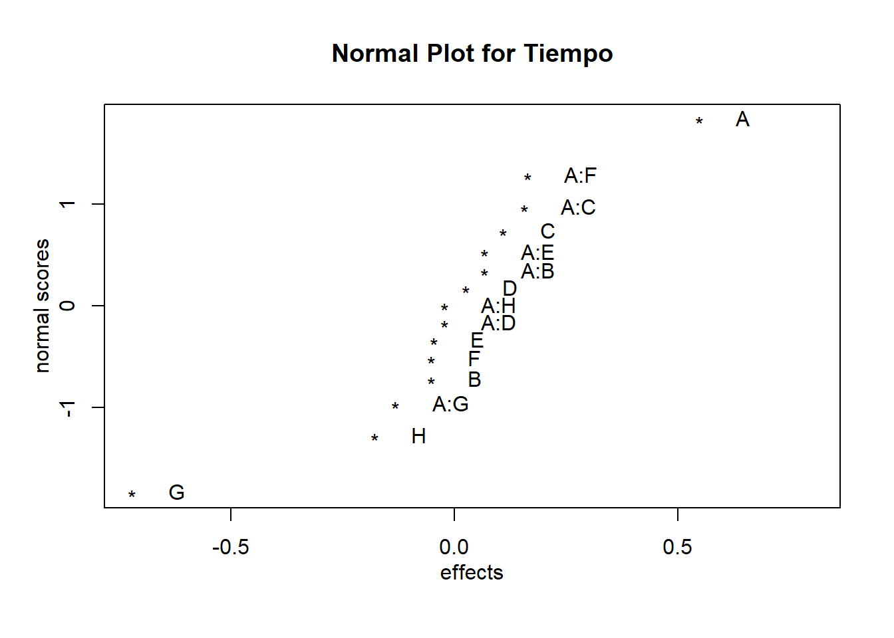
DanielPlot(DiseñoR, autolab = T)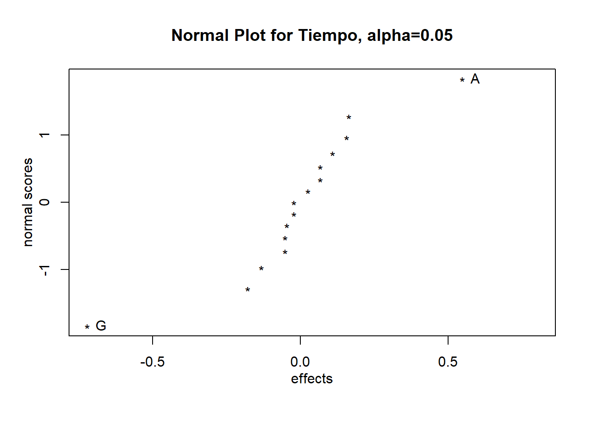
MEPlot(DiseñoR, cex.title = 0.9)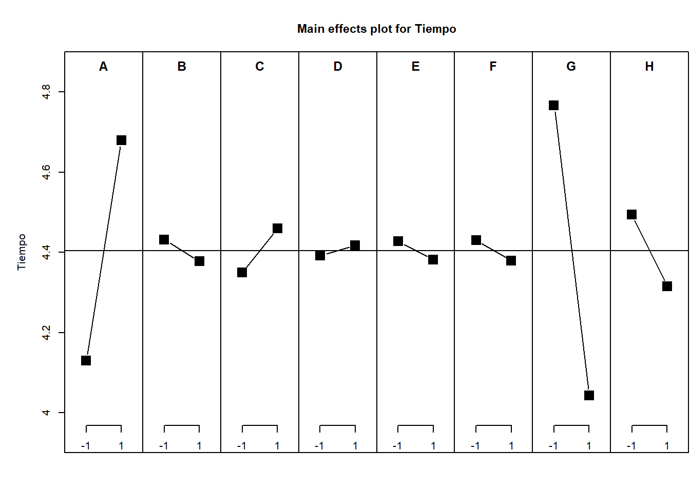
summary(lm(Tiempo ~ A + B + C + D + E + F + G + H , data = DiseñoR))
Call:
lm.default(formula = Tiempo ~ A + B + C + D + E + F + G + H,
data = DiseñoR)
Residuals:
Min 1Q Median 3Q Max
-0.86844 -0.32375 -0.01844 0.26281 1.23156
Coefficients:
Estimate Std. Error t value Pr(>|t|)
(Intercept) 4.40469 0.05748 76.634 < 2e-16 ***
A1 0.27437 0.05748 4.774 1.38e-05 ***
B1 -0.02625 0.05748 -0.457 0.650
C1 0.05469 0.05748 0.951 0.346
D1 0.01281 0.05748 0.223 0.824
E1 -0.02281 0.05748 -0.397 0.693
F1 -0.02594 0.05748 -0.451 0.654
G1 -0.36125 0.05748 -6.285 5.55e-08 ***
H1 -0.08938 0.05748 -1.555 0.126
---
Signif. codes: 0 '***' 0.001 '**' 0.01 '*' 0.05 '.' 0.1 ' ' 1
Residual standard error: 0.4598 on 55 degrees of freedom
Multiple R-squared: 0.5463, Adjusted R-squared: 0.4803
F-statistic: 8.279 on 8 and 55 DF, p-value: 2.767e-07summary(aov(lm(Tiempo ~ A + B + C + D + E + F + G + H , data = DiseñoR))) Df Sum Sq Mean Sq F value Pr(>F)
A 1 4.818 4.818 22.788 1.38e-05 ***
B 1 0.044 0.044 0.209 0.650
C 1 0.191 0.191 0.905 0.346
D 1 0.011 0.011 0.050 0.824
E 1 0.033 0.033 0.158 0.693
F 1 0.043 0.043 0.204 0.654
G 1 8.352 8.352 39.503 5.55e-08 ***
H 1 0.511 0.511 2.418 0.126
Residuals 55 11.629 0.211
---
Signif. codes: 0 '***' 0.001 '**' 0.01 '*' 0.05 '.' 0.1 ' ' 1El diseño factorial fraccionado 2^{8−4} con pseudoréplicas (64 experimentos) y bloqueo por grupo muestra un modelo estadísticamente significativo que explica el 54.6% de la variabilidad total en el tiempo de vuelo, con un error residual de 0.46 segundos. La estadística global es robusta (F=8.28, p<0.001), confirmando que el conjunto de factores estudiados produce cambios sistemáticos en el tiempo de vuelo.
Los factores G (gramaje del papel) y A (largo de alas) dominan claramente el comportamiento del sistema. El gramaje es el efecto más preponderante, reduciendo el tiempo de vuelo en aproximadamente 0.7 segundos al incrementarse de 80 a 100 g/m², lo que refleja el impacto directo del peso sobre la dinámica de caída. El largo de alas demuestra el único efecto positivo significativo, prolongando el vuelo en 0.55 segundos al aumentar la superficie de sustentación.
El factor H (uso de celo) pierde significancia respecto a análisis previos (p=0.126), sugiriendo que su efecto era menos robusto o depende de interacciones que el diseño actual no puede estimar. Los factores B, C, D, E y F resultan claramente no significativos (p>0.28), indicando que sus variaciones dentro del rango experimental no producen cambios detectables.
Al usar pseudoréplicas, los grados de libertad aumentan de 7 a 55, lo que mejora mucho la fiabilidad y capacidad del análisis, aunque también añade más variabilidad que reduce un poco la importancia de los efectos pequeños. Agrupar los experimentos por bloques es muy importante para separar las diferencias entre grupos de trabajo, aunque en este caso el efecto del bloque ya está incluido en la forma en que se aleatorizó el experimento.
Como es un diseño de resolución IV, los efectos principales siguen mezclados con interacciones de tres factores; la gran importancia y tamaño de G y A indican que son efectos reales, no productos de la confusión entre factores.
Helicóptero P.IV y P.III: bloque altura
Con esta consideración se establece que no interesan las interacciones entre el Grupo (bloque) y el resto de los factores experimentales. En este caso, los grupos se diferencian principalmente en la ubicación desde la cual se realizaron los lanzamientos: el grupo P.IV efectuó las pruebas desde el edificio Sabatini, mientras que el grupo P.III lo hizo desde el edificio 6.
Esta diferencia implica no solo una variación en la altura de lanzamiento, sino también cambios en las condiciones ambientales locales, como corrientes de aire, temperatura, humedad o turbulencias específicas de cada edificio. Estos factores constituyen una fuente adicional de variabilidad experimental ajena a los factores controlados en el diseño, por lo que su inclusión como bloque resulta imprescindible para aislar su efecto y evitar que confunda las estimaciones de los factores de interés principal.
Diseño <- FrF2(16, randomize = F, replications = 4,
factor.names = list(A="", B="", C="", D="", E="", F="", G="", H=""))
Diseño$Grupo <- as.factor(c(rep(1, 32), rep(-1, 32)))
Diseño run.no run.no.std.rp A B C D E F G H Grupo
1 1 1.1 -1 -1 -1 -1 -1 -1 -1 -1 1
2 2 2.1 1 -1 -1 -1 1 1 1 -1 1
3 3 3.1 -1 1 -1 -1 1 1 -1 1 1
4 4 4.1 1 1 -1 -1 -1 -1 1 1 1
5 5 5.1 -1 -1 1 -1 1 -1 1 1 1
6 6 6.1 1 -1 1 -1 -1 1 -1 1 1
7 7 7.1 -1 1 1 -1 -1 1 1 -1 1
8 8 8.1 1 1 1 -1 1 -1 -1 -1 1
9 9 9.1 -1 -1 -1 1 -1 1 1 1 1
10 10 10.1 1 -1 -1 1 1 -1 -1 1 1
11 11 11.1 -1 1 -1 1 1 -1 1 -1 1
12 12 12.1 1 1 -1 1 -1 1 -1 -1 1
13 13 13.1 -1 -1 1 1 1 1 -1 -1 1
14 14 14.1 1 -1 1 1 -1 -1 1 -1 1
15 15 15.1 -1 1 1 1 -1 -1 -1 1 1
16 16 16.1 1 1 1 1 1 1 1 1 1
17 17 1.2 -1 -1 -1 -1 -1 -1 -1 -1 1
18 18 2.2 1 -1 -1 -1 1 1 1 -1 1
19 19 3.2 -1 1 -1 -1 1 1 -1 1 1
20 20 4.2 1 1 -1 -1 -1 -1 1 1 1
21 21 5.2 -1 -1 1 -1 1 -1 1 1 1
22 22 6.2 1 -1 1 -1 -1 1 -1 1 1
23 23 7.2 -1 1 1 -1 -1 1 1 -1 1
24 24 8.2 1 1 1 -1 1 -1 -1 -1 1
25 25 9.2 -1 -1 -1 1 -1 1 1 1 1
26 26 10.2 1 -1 -1 1 1 -1 -1 1 1
27 27 11.2 -1 1 -1 1 1 -1 1 -1 1
28 28 12.2 1 1 -1 1 -1 1 -1 -1 1
29 29 13.2 -1 -1 1 1 1 1 -1 -1 1
30 30 14.2 1 -1 1 1 -1 -1 1 -1 1
31 31 15.2 -1 1 1 1 -1 -1 -1 1 1
32 32 16.2 1 1 1 1 1 1 1 1 1
33 33 1.3 -1 -1 -1 -1 -1 -1 -1 -1 -1
34 34 2.3 1 -1 -1 -1 1 1 1 -1 -1
35 35 3.3 -1 1 -1 -1 1 1 -1 1 -1
36 36 4.3 1 1 -1 -1 -1 -1 1 1 -1
37 37 5.3 -1 -1 1 -1 1 -1 1 1 -1
38 38 6.3 1 -1 1 -1 -1 1 -1 1 -1
39 39 7.3 -1 1 1 -1 -1 1 1 -1 -1
40 40 8.3 1 1 1 -1 1 -1 -1 -1 -1
41 41 9.3 -1 -1 -1 1 -1 1 1 1 -1
42 42 10.3 1 -1 -1 1 1 -1 -1 1 -1
43 43 11.3 -1 1 -1 1 1 -1 1 -1 -1
44 44 12.3 1 1 -1 1 -1 1 -1 -1 -1
45 45 13.3 -1 -1 1 1 1 1 -1 -1 -1
46 46 14.3 1 -1 1 1 -1 -1 1 -1 -1
47 47 15.3 -1 1 1 1 -1 -1 -1 1 -1
48 48 16.3 1 1 1 1 1 1 1 1 -1
49 49 1.4 -1 -1 -1 -1 -1 -1 -1 -1 -1
50 50 2.4 1 -1 -1 -1 1 1 1 -1 -1
51 51 3.4 -1 1 -1 -1 1 1 -1 1 -1
52 52 4.4 1 1 -1 -1 -1 -1 1 1 -1
53 53 5.4 -1 -1 1 -1 1 -1 1 1 -1
54 54 6.4 1 -1 1 -1 -1 1 -1 1 -1
55 55 7.4 -1 1 1 -1 -1 1 1 -1 -1
56 56 8.4 1 1 1 -1 1 -1 -1 -1 -1
57 57 9.4 -1 -1 -1 1 -1 1 1 1 -1
58 58 10.4 1 -1 -1 1 1 -1 -1 1 -1
59 59 11.4 -1 1 -1 1 1 -1 1 -1 -1
60 60 12.4 1 1 -1 1 -1 1 -1 -1 -1
61 61 13.4 -1 -1 1 1 1 1 -1 -1 -1
62 62 14.4 1 -1 1 1 -1 -1 1 -1 -1
63 63 15.4 -1 1 1 1 -1 -1 -1 1 -1
64 64 16.4 1 1 1 1 1 1 1 1 -1
class=design, type= FrF2
NOTE: columns run.no and run.no.std.rp are annotation,
not part of the data frameTiempo1.1 <- c(5.45, 4.19, 4.18, 3.93, 3.84, 4.8, 4.44, 5.4, 3.15, 4.57, 3.96, 5.39, 4.75, 4.91, 4.72, 4.48)
Tiempo2.1 <- c(5.47, 4.32, 4.34, 4.08, 3.89, 5.35, 3.84, 5.12, 3.6, 4.93, 3.28, 4.64, 4.21, 4.21, 4.01, 4.04)
Tiempo2.1 <- c(3.04, 3.35, 3.65, 3.02, 3.03, 3.69, 3.05, 4.43, 3.39, 3.97, 2.88, 3.94, 3.57, 3.32, 3.8, 3.54)
Tiempo2.2 <- c(3.71, 4.51, 3.73, 3.11, 3.39, 4.53, 3.23, 4.27, 3.01, 4.56, 2.88, 4.39, 3.54, 3.73, 3.48, 3.67)
Tiempo <- c(Tiempo1.1,Tiempo1.2,Tiempo2.1,Tiempo2.2)
DiseñoR <- add.response(Diseño, Tiempo)
DanielPlot(DiseñoR, autolab = F)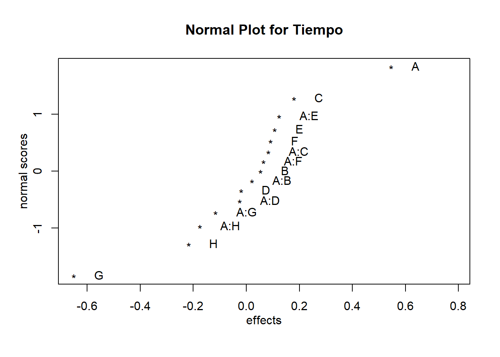
DanielPlot(DiseñoR, autolab = T)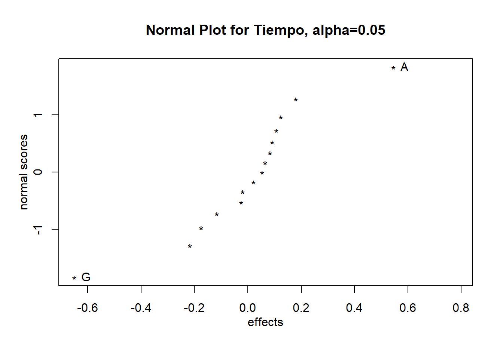
MEPlot(DiseñoR, cex.title = 0.9)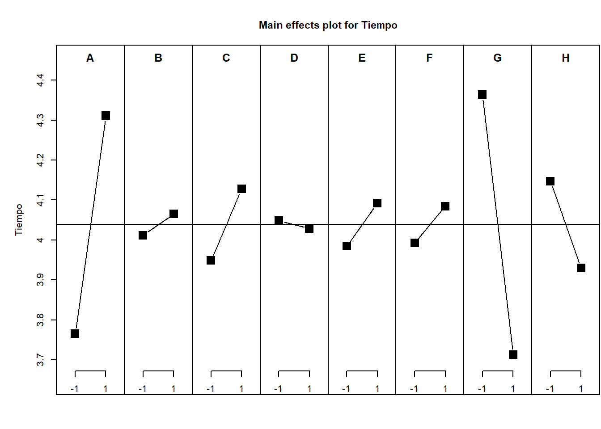
summary(lm(Tiempo ~ A + B + C + D + E + F + G + H , data = DiseñoR))
Call:
lm.default(formula = Tiempo ~ A + B + C + D + E + F + G + H,
data = DiseñoR)
Residuals:
Min 1Q Median 3Q Max
-0.95359 -0.44234 -0.01047 0.40391 1.50016
Coefficients:
Estimate Std. Error t value Pr(>|t|)
(Intercept) 4.038594 0.076047 53.106 < 2e-16 ***
A1 0.272969 0.076047 3.589 0.000706 ***
B1 0.026719 0.076047 0.351 0.726673
C1 0.089844 0.076047 1.181 0.242520
D1 -0.009844 0.076047 -0.129 0.897480
E1 0.053594 0.076047 0.705 0.483945
F1 0.045781 0.076047 0.602 0.549642
G1 -0.325469 0.076047 -4.280 7.54e-05 ***
H1 -0.108594 0.076047 -1.428 0.158953
---
Signif. codes: 0 '***' 0.001 '**' 0.01 '*' 0.05 '.' 0.1 ' ' 1
Residual standard error: 0.6084 on 55 degrees of freedom
Multiple R-squared: 0.3932, Adjusted R-squared: 0.3049
F-statistic: 4.454 on 8 and 55 DF, p-value: 0.0003318summary(aov(lm(Tiempo ~ A + B + C + D + E + F + G + H , data = DiseñoR))) Df Sum Sq Mean Sq F value Pr(>F)
A 1 4.769 4.769 12.884 0.000706 ***
B 1 0.046 0.046 0.123 0.726673
C 1 0.517 0.517 1.396 0.242520
D 1 0.006 0.006 0.017 0.897480
E 1 0.184 0.184 0.497 0.483945
F 1 0.134 0.134 0.362 0.549642
G 1 6.780 6.780 18.317 7.54e-05 ***
H 1 0.755 0.755 2.039 0.158953
Residuals 55 20.357 0.370
---
Signif. codes: 0 '***' 0.001 '**' 0.01 '*' 0.05 '.' 0.1 ' ' 1El diseño factorial fraccionado 2^{8−4} con pseudoréplicas y bloqueo por altura (64 experimentos total) muestra un modelo estadísticamente significativo (F 8,55=4.45, p<0.001) que explica el 39.3% de la variabilidad total, con un error residual de 0.608 segundos. Aunque la proporción de varianza explicada es menor que en análisis previos, la inclusión de datos de un segundo grupo experimental aumenta la robustez y generalidad de las conclusiones.
Los factores G (gramaje del papel) y A (largo de alas) dominan claramente el comportamiento del sistema. El gramaje es el efecto más preponderante, reduciendo el tiempo de vuelo en aproximadamente 0.65 segundos al incrementarse de 80 a 100 g/m², confirmando el impacto directo del peso. El largo de alas muestra el único efecto positivo significativo (, prolongando el vuelo en 0.55 segundos al aumentar la superficie de sustentación. El resto de factores (B, C, D, E, F, H) resultan no significativos (p>0.15), indicando que sus variaciones dentro del rango experimental no producen cambios detectables.
La inclusión de pseudoréplicas aumenta los grados de libertad de 7 a 55, mejorando sustancialmente la fiabilidad y capacidad del análisis, aunque también añade más variabilidad que reduce un poco la importancia de los efectos pequeños. El bloqueo por grupo es muy importante para separar las diferencias entre los dos lugares de lanzamiento, aunque en este caso el efecto del bloque queda incluido en la forma en que se aleatorizó el experimento. Como es un diseño de resolución IV, los efectos principales siguen mezclados con interacciones de tres factores; la gran importancia y tamaño de G y A indican que son efectos reales, no productos de la confusión entre factores.
Conclusión
El mejor experimento, que podemos hacer con lo estudiado, es aquel que combina diseño fraccionado para ahorrar recursos, réplicas múltiples para ganar precisión, y bloqueo para controlar diferencias entre condiciones de lanzamiento. Esta estrategia permite identificar con confianza que el peso del papel y el tamaño de las alas son los factores dominantes del tiempo de vuelo, mientras evita conclusiones erróneas por no haber controlado las condiciones ambientales.
💬 Comentarios